LEGO 产品可视化

本教程将介绍如何对 LEGO Technic 拉力赛车的 CAD 模型进行照明、着色和渲染。教程中将演示如何使用 Arnold 区域光 (quad_light) 对汽车模型进行照明。此外，还会介绍如何将 standard_surface 与 round_corners 结合使用以逼真地对 LEGO 模型进行着色，以及如何使用 clip_geo 着色器创建横截面动画效果。完成对场景的着色和照明后，我们将介绍如何使用 Arnold *卡通*着色器创建可用于说明手册中的风格化外观。最后，我们将调整一些 Arnold 渲染设置以提高最终渲染的质量。有关使用 Arnold 进行 LEGO 渲染的更多示例，请单击此处。
要下载 LEGO Technic 拉力赛车模型，请单击此处。
导入 CAD 数据
- 首先，下载 CAD 模型（上面的链接）。
- 提取内容并导入此 step 文件：LEGO Technic - Rally Car (42077).stp
- 定位并旋转汽车，使其平放在栅格上，如上面的动画中所示。
- 创建地板平面（或使用上面链接中提供的工作室照明场景的圆柱型全景图）。
- 为其指定一个 standard_surface 着色器。将 specular_weight 减小到 0（我们不希望圆柱型全景图中出现任何分散注意力的镜面反射，以免干扰对汽车模型的注意力）。
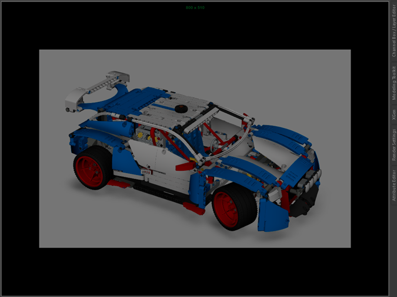
照明
我们将向场景添加一个 Arnold quad_light。该灯光将模拟柔光箱工作室照明设置（本教程对此进行了介绍）。或者，您也可以从页面顶部的链接下载预制的照明工作室。
- 转到“Arnold -> 灯光”(Arnold -> Lights)。选择“区域光”(Area Light)（默认为 quad_light）。对其进行定位、定向和缩放，使其比汽车略大，如下图所示。
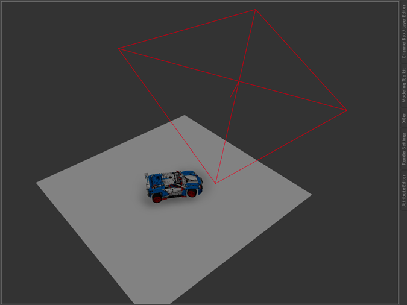
场景使用 quad_light 进行照明（曝光：16）
- 如果渲染场景，它将使用默认灯光“曝光”(Exposure)并显示为黑色。将“曝光”(Exposure)增加到 16 左右。这时应该会看到类似下图的效果。在此阶段不必担心噪波。这是因为默认“灯光采样数”(Light Samples)设置为 1，默认“摄影机(AA)”(Camera (AA))采样数设置为 3，有助于快速进行交互式渲染。我们稍后在准备好进行最终渲染时将调整这些设置。
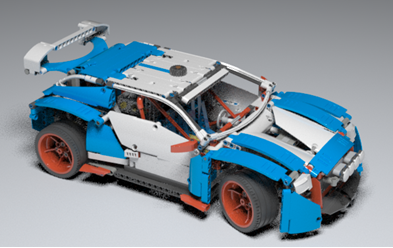
*曝光是一个 F 制光圈值，用于将强度乘以 2 的 F 制光圈次幂。将曝光*增加 1 可使灯光量加倍。
使用标准曲面进行逼真着色
场景转化器
现在，我们将着色器（Phong 等）转化为 Arnold standard_surface 着色器。
- 转到“Arnold -> 着色器 -> 将着色器转化为 Arnold”(Arnold -> Shaders -> Convert Shaders to Arnold)。
- 此时将显示一个对话框窗口，询问是转化所有着色器还是转化选定着色器。选择“全部”(All)。您应该会看到，所有场景材质现在都是 standard_surface。
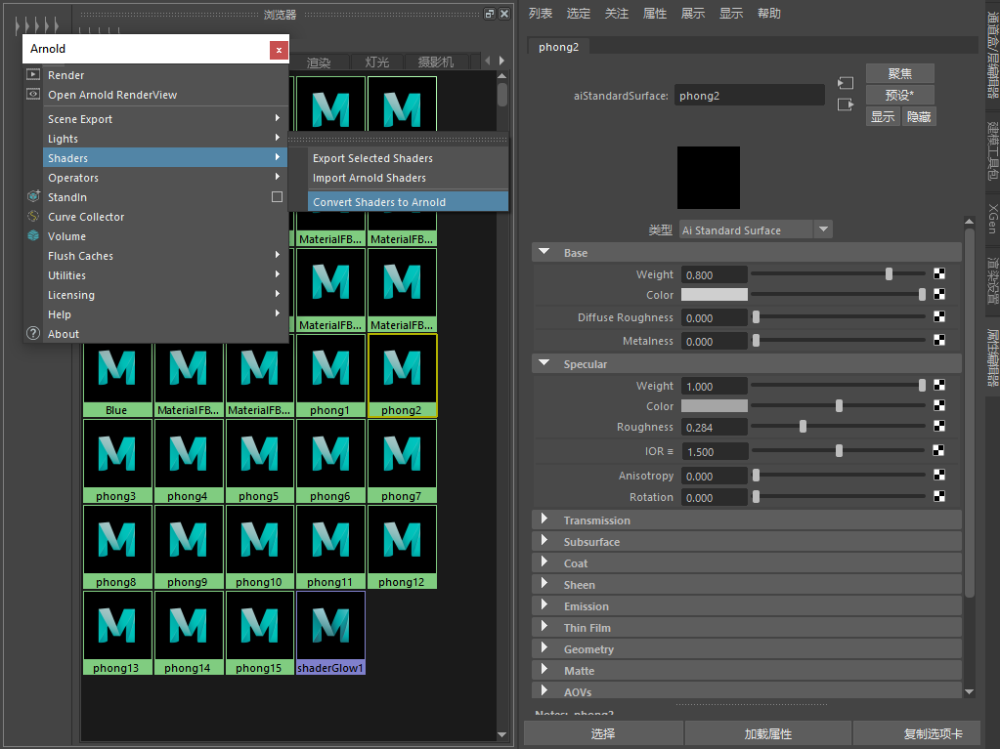
标准曲面
现在，我们要创建一组可在所有 standard_surface 着色器中复制的逼真塑料着色器参数。更改每个 standard_surface 着色器的以下参数，使积木看起来更像塑料：
- specular_ior：1.55（塑料）。
- specular_roughness：0.2。
- coat_weight：1。这将在镜面反射层之上提供一个有光泽的透明涂层。
- coat_roughness：0.1。
- coat_ior：1.55（塑料）。
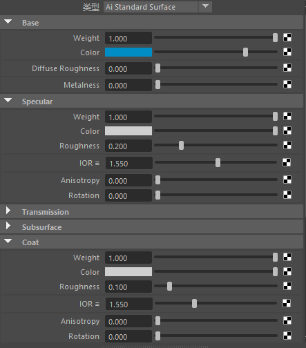
LEGO 塑料着色器设置
圆角
此着色器可修改边附近的着色法线以呈现圆角外观。可与尚未对倒角进行建模的坚硬曲面模型结合使用以模拟圆化倒角边，从而节省宝贵的建模时间。
- 此着色器的一种简便使用方法是，将其输出法线连接到 standard_surface.normal。
- 将“半径”(Radius)增加到 0.1 左右以查看效果。在进行最终帧渲染时，可能需要增加采样数。
| 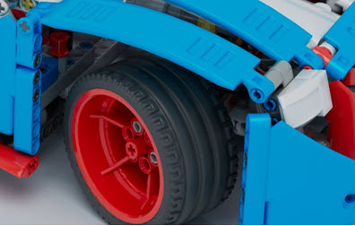 | |
| 无 round_corners | 有 round_corners |
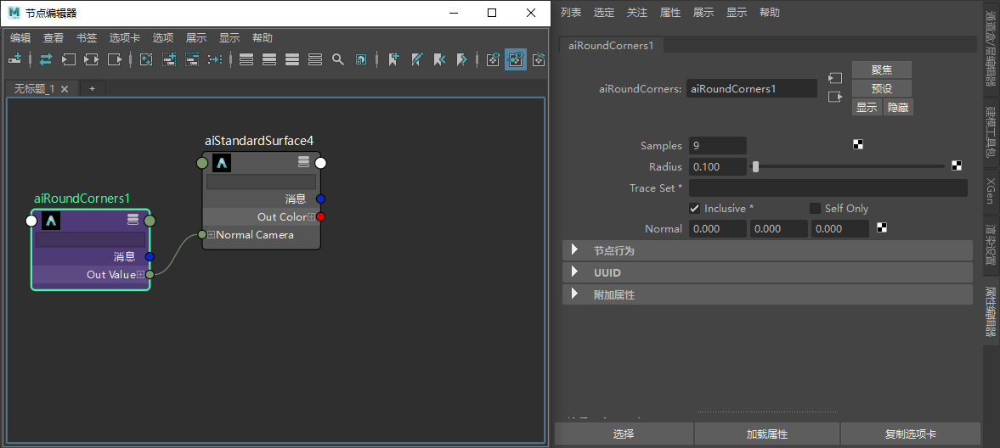
*round_corners -> standard_surface.normal_camera*
剪裁几何体着色器
clip_geo 当前无法与 GPU 结合使用。
我们可以使用 clip_geo 着色器在摄影机模型中创建切除着色效果。
- 创建一个长方体（要用于剪裁的几何体），并将其放置到要剪裁几何体的位置。
- 将 clip_geo 着色器指定给长方体。将该立方体放置在适当位置，使其穿透汽车。渲染场景时，您应该会发现它将切入（剪裁）到汽车几何体中（请参见顶部的标题图像）。但是，它也可能会剪裁地板平面，我们并不希望这样。
避免剪裁地板平面：
- 在着色器“跟踪集”(Trace Sets)文本框中输入名称以创建一个跟踪集（例如“objects_not_to_clip”）。
- 清除“包括”(Inclusive)复选框。
- 将对象放置在此跟踪集中（通过为这些形状输入相同的跟踪集名称）。
- 将剪裁不在此跟踪集中的所有对象。
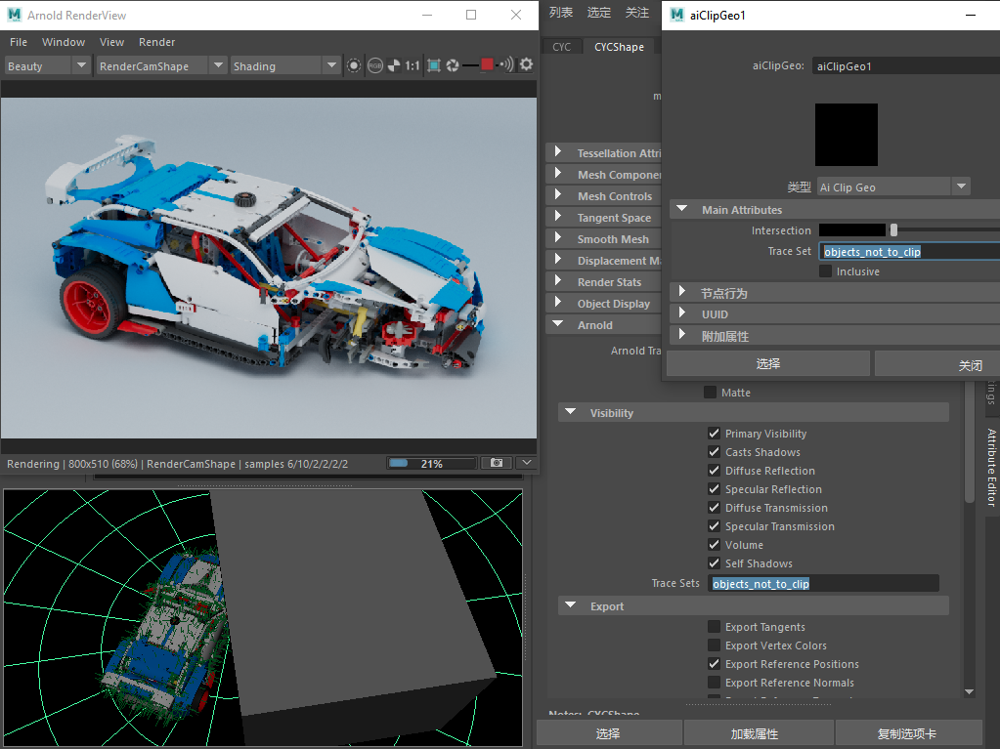
指定了 clip_geo 的立方体。平面未被剪裁，因为它具有与 clip_geo 跟踪集匹配的跟踪集。“包括”(Inclusive)处于禁用状态。
使用卡通着色器进行风格化着色
- 将 standard_surface 着色器替换为*卡通*着色器。更改以下参数：
- 将 angle_threshold 减小到 10 左右。这将在几何体周围提供更详细的边。
- 将 base_weight 减小到 0。我们希望通过仅使用 emission 获得纯色效果。
- 确保 specular_weight 为 0。
- 将 emission_weight 增大到 1。
- 隐藏地板平面/CYC 几何体并渲染场景。
要查看 toon edge，必须将“过滤器类型”(filter type)（采样设置）更改为“轮廓”(Contour)。请注意，增加“轮廓的过滤器*宽度”(contour filter width)*（采样设置）值将会增加渲染时间。
- 您可能会发现 contour_filter_width 似乎太大（具体取决于图像大小分辨率）。如果它看起来太厚，请尝试将其减小到 1 左右。
| 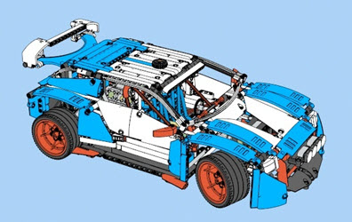 | 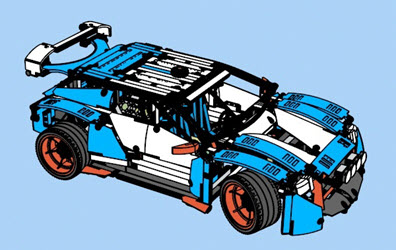 |
| contour_filter_width：1 | contour_filter_width：2 |
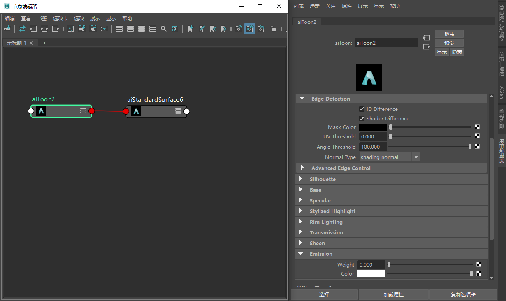
卡通着色器参数
最终渲染设置
光线深度
使用 CYC 背景几何体（页面顶部的场景链接）进行渲染时，在 diffuse_ray_depth 为默认值 1 的情况下，场景看起来非常暗。增加此值可以使更多的灯光在 CYC 和汽车几何体周围反弹（但渲染时间会增加）。
| 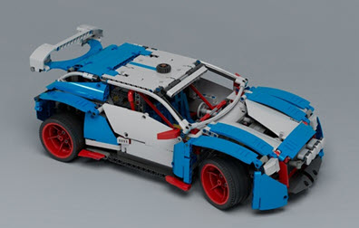 | 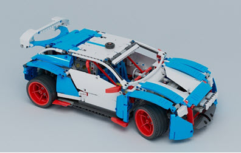 |
| diffuse_ray_depth：1（默认值） | diffuse_ray_depth：4 |
减少噪波
在进行最终帧渲染时，我们需要增加一些采样设置。
四边形灯光采样数
- 选择 quad_light 灯光，并将采样数增加到 3 或 4。这应该会清除阴影中的大量噪波。
| 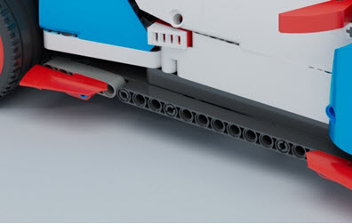 | |
| quad_light.samples：1（默认值） | quad_light.samples：4 |
漫反射采样数（内部噪波）
汽车内部和下方有一些明显的噪波。增加 diffuse_samples 值应该会清除这些噪波。
如果不确定噪波来自何处，请记得检查 AOV，例如阴影 (light_samples) 或间接灯光 (diffuse_samples)。
| 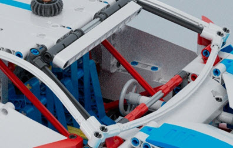 | |
| diffuse_samples：2（默认值） | diffuse_samples：10 |
摄影机 (AA) 采样数
- 最后，将“摄影机(AA)”(Camera(AA))值增加到 5 左右。采样数越多，抗锯齿质量就越高，但渲染时间也越长。
| 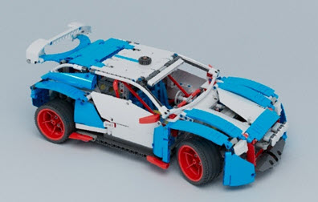 | |
| 摄影机 (AA) 采样数：3（默认值） | 摄影机 (AA) 采样数：5 |
就是这样。您已看完本教程。做得不错！我们建议您多花一些时间阅读 MtoA 用户手册，该手册中提供了像本教程这样的其他教程。